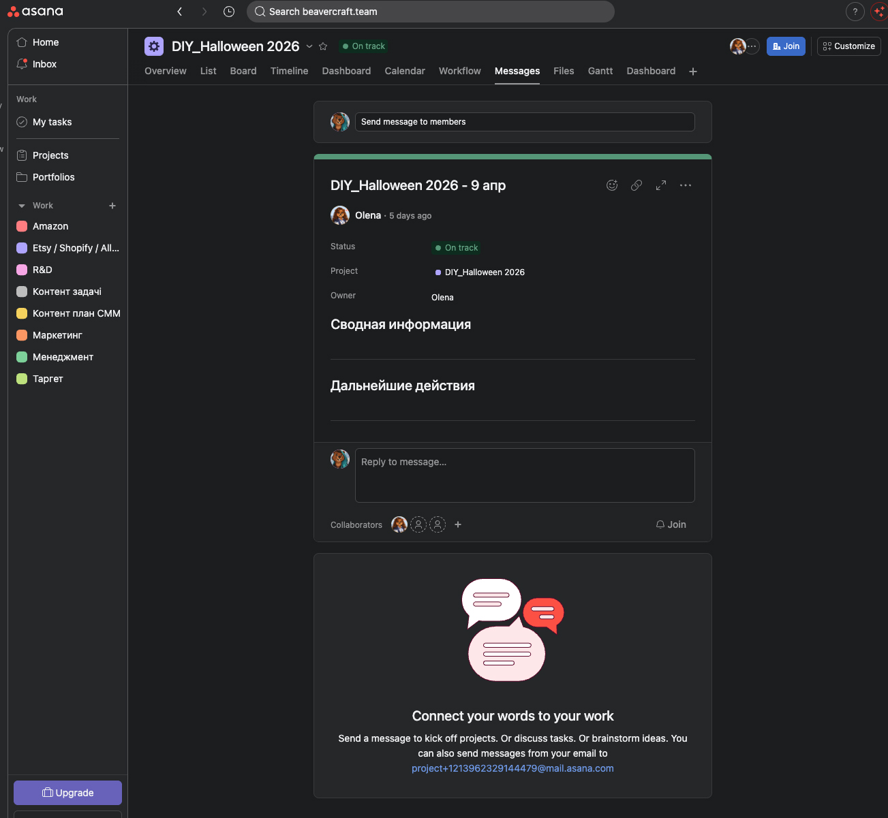
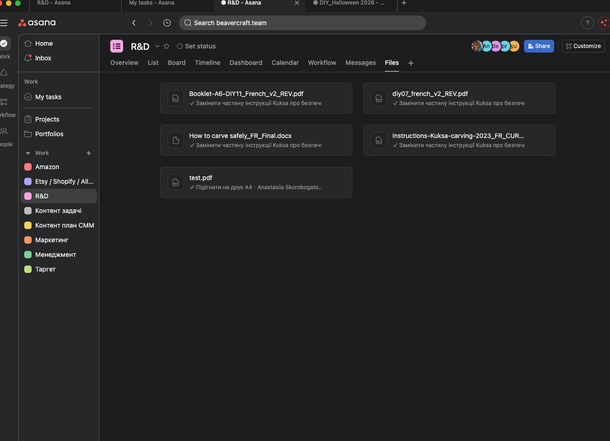
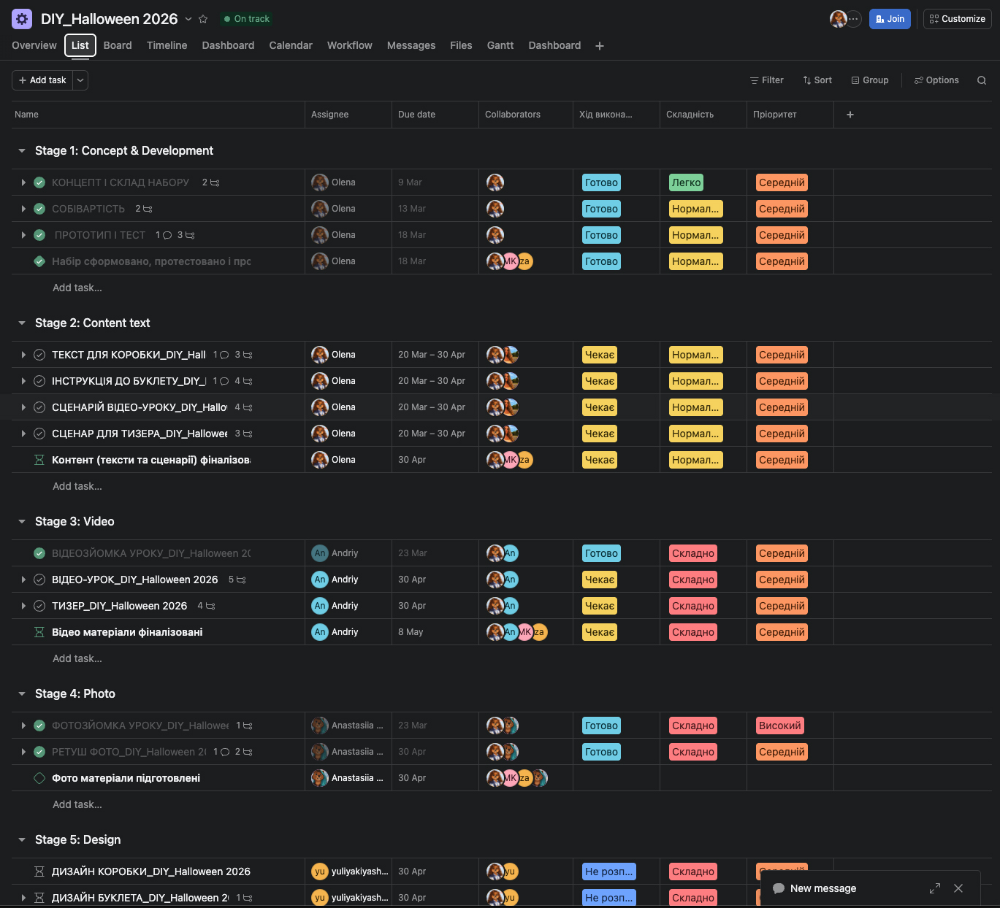
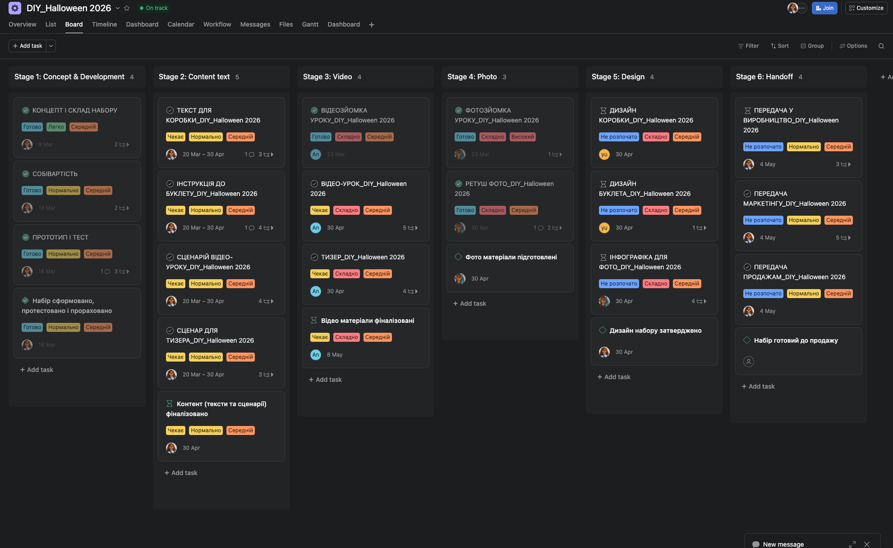
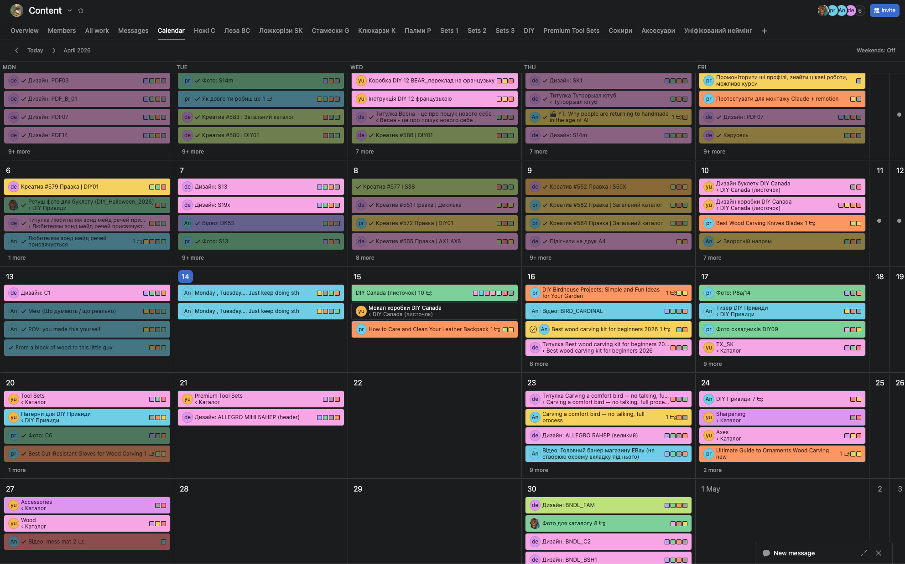
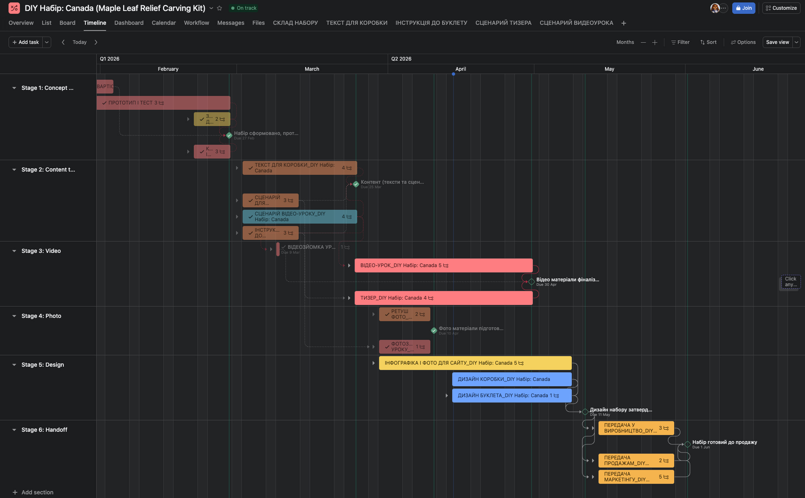
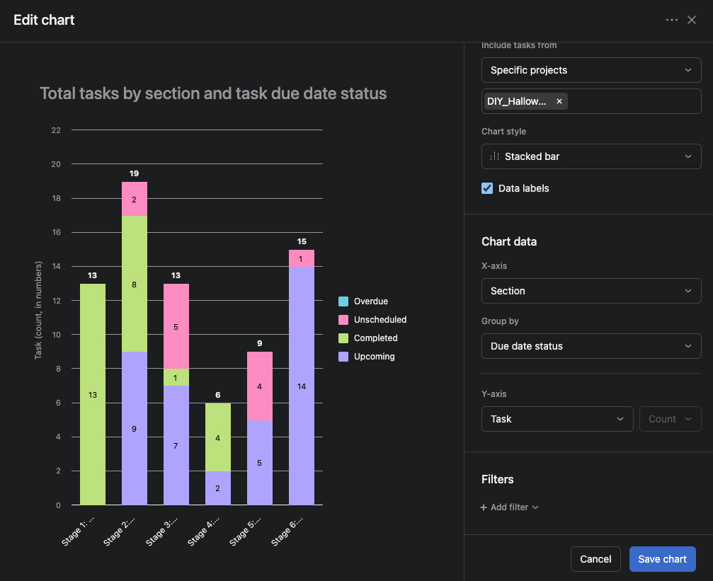

Новий стандарт роботи для нашої команди
Більше ніякого хаосу в Telegram чатах
Зробіть так, щоб Asana допомагала, а не спамила.
💬 Messenger Проєкту: Розділ "Messages" — це місце для стратегічних обговорень та оголошень для всієї команди.
📎 Файли: Усі документи, ТЗ та візуали прикріплюються до задач. У вкладці "Files" зберігається повний архів. Більше не треба шукати матеріали в чатах.





Щоб Настя знала, коли Саша закінчить дизайн, і можна було почати наступний етап.


Бачити все як на долоні: На Дашборді миттєво видно кількість задач по етапах на проєкті.
Керівники бачать реальну картину автоматично. Жодних мікроменеджерських питань "На якому ми етапі?".
Реєструємось, налаштовуємо My Tasks та ставимо перші задачі (тегайте @Andriy або @Sasha, якщо потрібна допомога).
Успіхів нам усім!